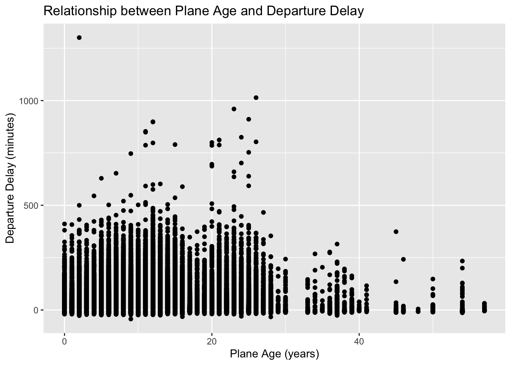
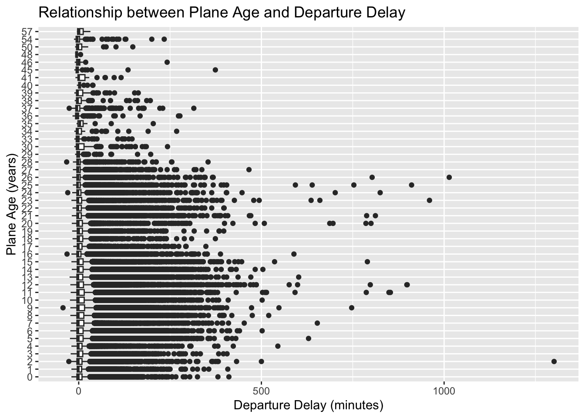
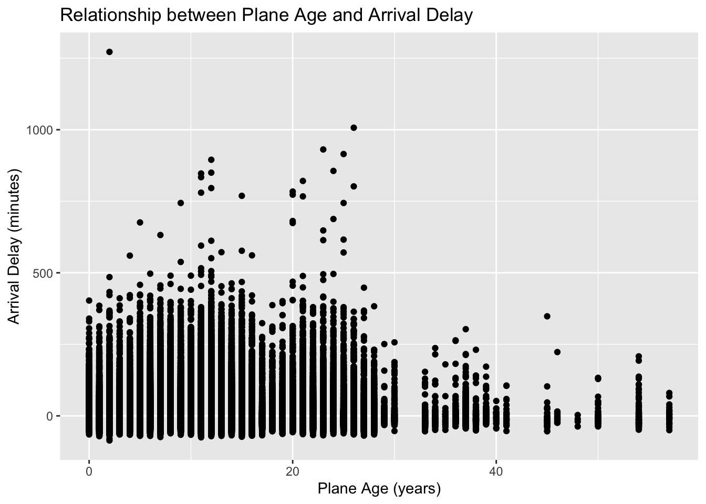
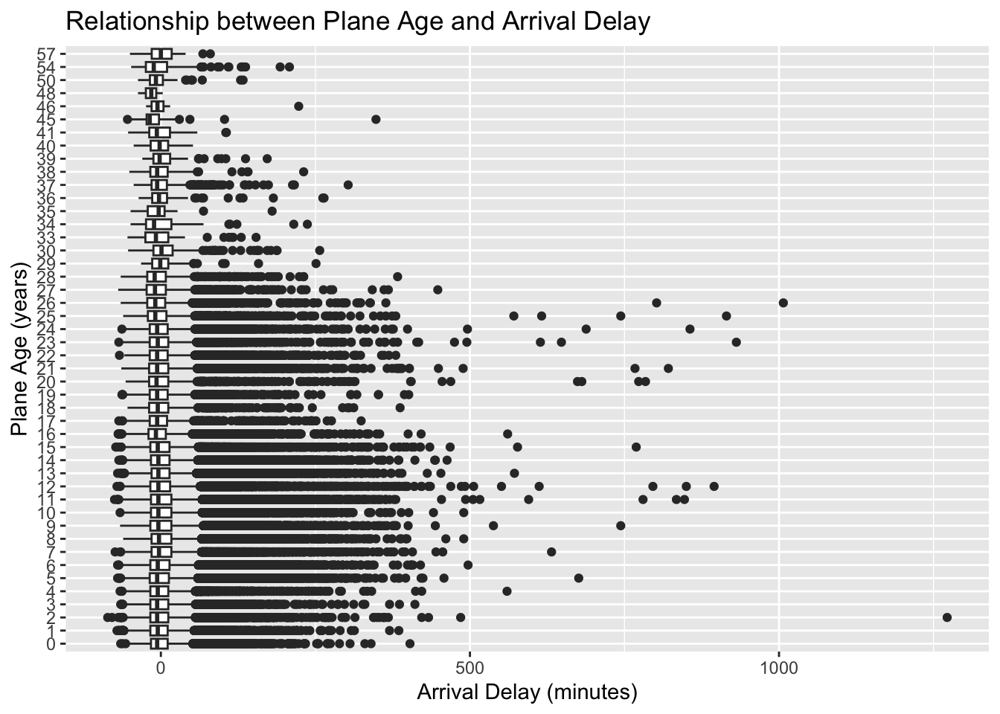
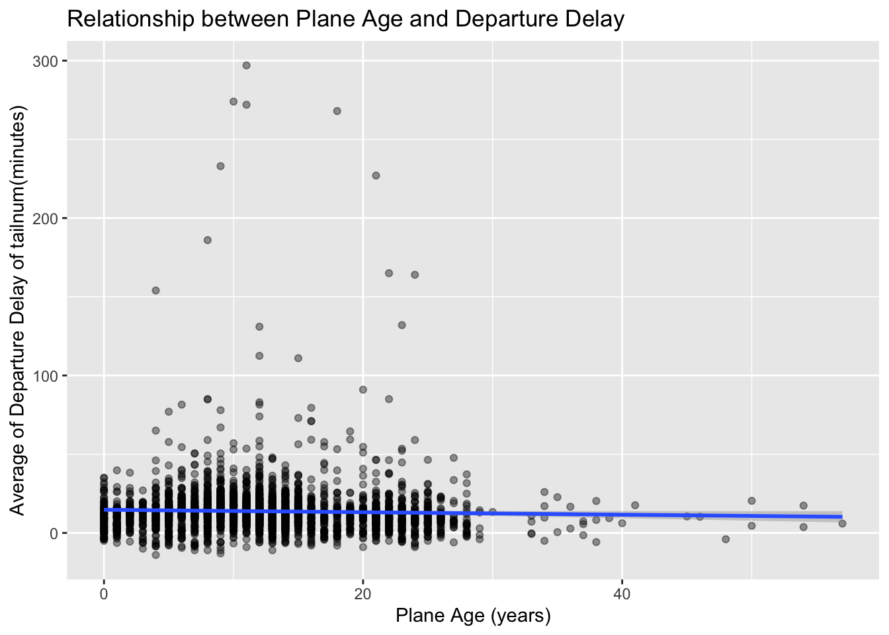
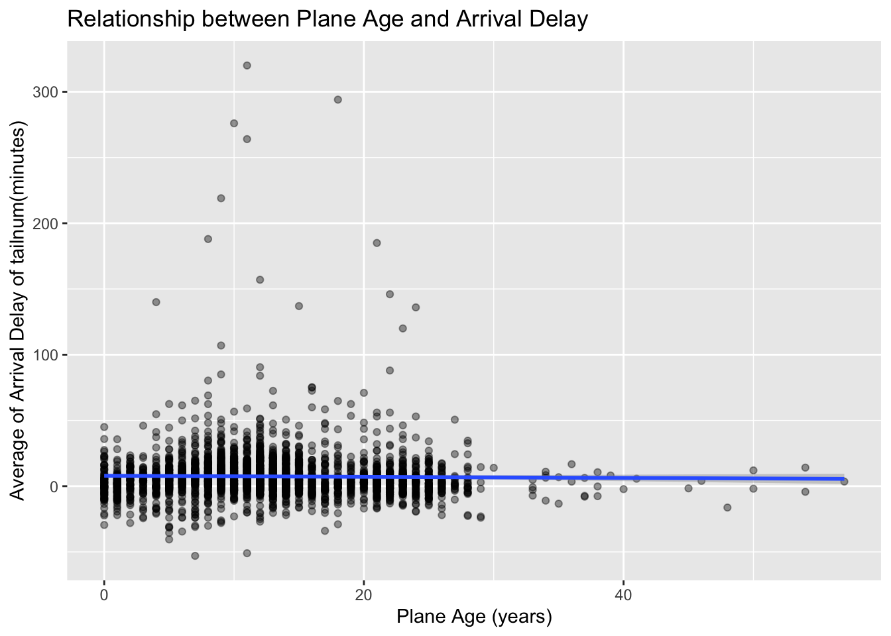
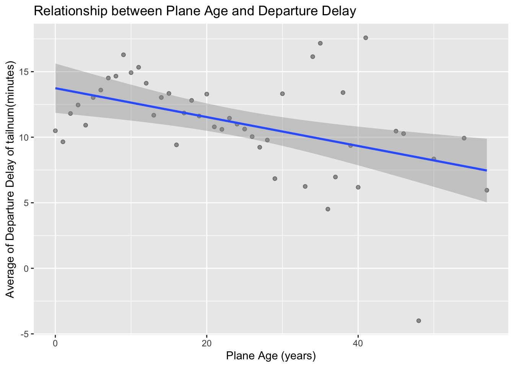
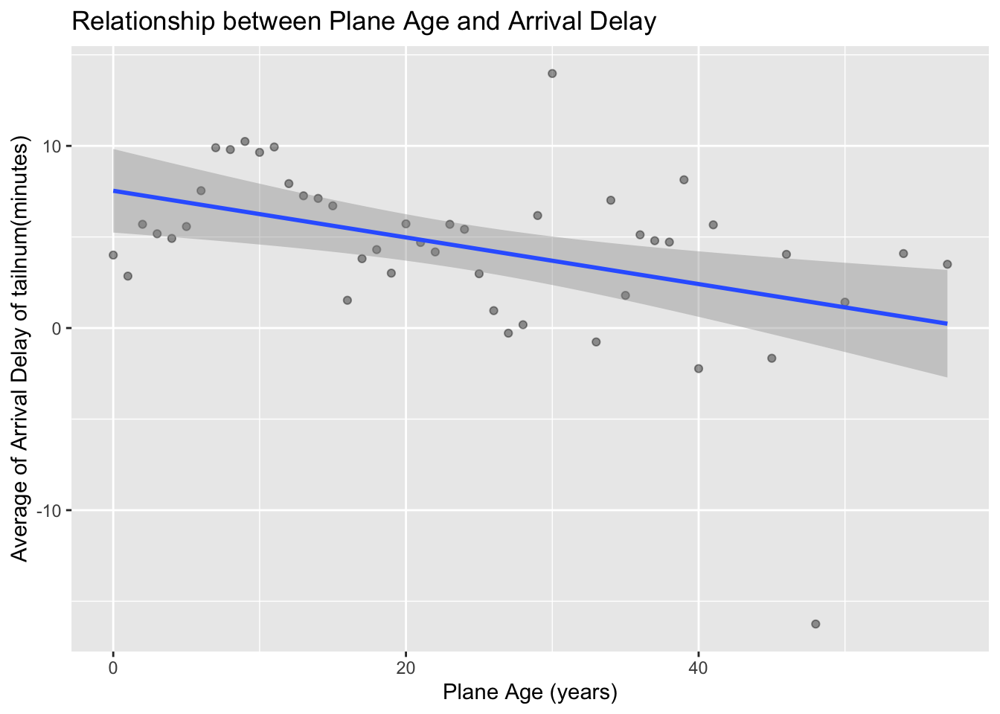

# Install pacman if it's not already installed
if (!require("pacman")) install.packages("pacman")Loading required package: pacmanThis assignment will Consider the data in the nycflights13 package.
Problem 2: Is there a relationship between the age of a plane and its delays?
Problem 3: Find the 10 days of the year that have the highest median departure delay, then select all flights from those 10 days.
# Install pacman if it's not already installed
if (!require("pacman")) install.packages("pacman")Loading required package: pacmanLoad the packages we need.
# Use pacman to install (if needed) and load the packages
pacman::p_load(pacman, tidyverse,
nycflights13)
options(dplyr.summarise.inform = FALSE)help(package = "nycflights13")
data(package = "nycflights13")We can see there are five data sets.
airlines Airline names.
airports Airport metadata
flights Flights data
planes Plane metadata.
weather Hourly weather dataTo explore the relationship between plane age and departure delays, I tried several approaches.
First, I made a scatterplot using all flights, but the data was too noisy to see any clear pattern. Then I calculated the correlation between plane age and delay, but it was weak and not very helpful.
So, I decided to group the data by plane (tailnum) and compute the average delay for each plane.
Lastly, I tried to group it by year and claculte it. This made the pattern easier to see.
The final plot shows a new pattern: older planes tended to have less delays. The trend line shows a slight negative relationship between age and delay.
[I thought it’s better to show the whole process because it is homework, so the results don’t looks good but the final chart shows it has correlation]
#View(planes)
## ?planes
planes %>%
select(tailnum, made_year = year ) -> planes_year## ?flights
## View(flights)
flights_year <- flights %>%
left_join(planes_year, by = "tailnum")
flights_year %>%
mutate(plane_age = year - made_year) -> df1
head(df1)# A tibble: 6 × 21
year month day dep_time sched_dep_time dep_delay arr_time sched_arr_time
<int> <int> <int> <int> <int> <dbl> <int> <int>
1 2013 1 1 517 515 2 830 819
2 2013 1 1 533 529 4 850 830
3 2013 1 1 542 540 2 923 850
4 2013 1 1 544 545 -1 1004 1022
5 2013 1 1 554 600 -6 812 837
6 2013 1 1 554 558 -4 740 728
# ℹ 13 more variables: arr_delay <dbl>, carrier <chr>, flight <int>,
# tailnum <chr>, origin <chr>, dest <chr>, air_time <dbl>, distance <dbl>,
# hour <dbl>, minute <dbl>, time_hour <dttm>, made_year <int>,
# plane_age <int>colnames(df1) [1] "year" "month" "day" "dep_time"
[5] "sched_dep_time" "dep_delay" "arr_time" "sched_arr_time"
[9] "arr_delay" "carrier" "flight" "tailnum"
[13] "origin" "dest" "air_time" "distance"
[17] "hour" "minute" "time_hour" "made_year"
[21] "plane_age" colSums(is.na(df1)) year month day dep_time sched_dep_time
0 0 0 8255 0
dep_delay arr_time sched_arr_time arr_delay carrier
8255 8713 0 9430 0
flight tailnum origin dest air_time
0 2512 0 0 9430
distance hour minute time_hour made_year
0 0 0 0 57912
plane_age
57912 colMeans(is.na(df1)) year month day dep_time sched_dep_time
0.000000000 0.000000000 0.000000000 0.024511842 0.000000000
dep_delay arr_time sched_arr_time arr_delay carrier
0.024511842 0.025871796 0.000000000 0.028000808 0.000000000
flight tailnum origin dest air_time
0.000000000 0.007458964 0.000000000 0.000000000 0.028000808
distance hour minute time_hour made_year
0.000000000 0.000000000 0.000000000 0.000000000 0.171959997
plane_age
0.171959997 When I check the NA, dep_delay’s percentage is 2.45 and arr_delay’s is 2.8. So, I will remove the NA
df_clean <-df1 %>%
filter(!is.na(dep_delay), !is.na(arr_delay), !is.na(plane_age))
#colMeans(is.na(df_clean))Now we are ready to analyse with data named ‘df_clean’
First try is scatter plot. It doesn’t look good and hard to find pattern or linear.
head(df_clean)# A tibble: 6 × 21
year month day dep_time sched_dep_time dep_delay arr_time sched_arr_time
<int> <int> <int> <int> <int> <dbl> <int> <int>
1 2013 1 1 517 515 2 830 819
2 2013 1 1 533 529 4 850 830
3 2013 1 1 542 540 2 923 850
4 2013 1 1 544 545 -1 1004 1022
5 2013 1 1 554 600 -6 812 837
6 2013 1 1 554 558 -4 740 728
# ℹ 13 more variables: arr_delay <dbl>, carrier <chr>, flight <int>,
# tailnum <chr>, origin <chr>, dest <chr>, air_time <dbl>, distance <dbl>,
# hour <dbl>, minute <dbl>, time_hour <dttm>, made_year <int>,
# plane_age <int>df_clean %>%
ggplot(data = df_clean, mapping = aes(x = plane_age, y = dep_delay))+
geom_point()+
labs(title = "Relationship between Plane Age and Departure Delay",
x = "Plane Age (years)",
y = "Departure Delay (minutes)")
Next try is box plot. It seems a lot of outlier. Also, it’s hard to read.
ggplot(df_clean, mapping = aes(x = as.factor(plane_age), y = dep_delay)) +
geom_boxplot()+
coord_flip()+
labs(title = "Relationship between Plane Age and Departure Delay",
x = "Plane Age (years)",
y = "Departure Delay (minutes)")
So, then let’s try to use number. I can try to use Pearson correlation coefficient using the cor() function. The result is -.015. It is weak correlation.
cor(df_clean$plane_age, df_clean$dep_delay, use = "complete.obs")[1] -0.01513102I will try to do the same with departure delay. It also doesn’t look good to find any pattern.
df_clean %>%
ggplot(data = df_clean, mapping = aes(x = plane_age, y = arr_delay))+
geom_point()+
labs(title = "Relationship between Plane Age and Arrival Delay",
x = "Plane Age (years)",
y = "Arrival Delay (minutes)")
ggplot(df_clean, mapping = aes(x = as.factor(plane_age), y = arr_delay)) +
geom_boxplot()+
coord_flip()+
labs(title = "Relationship between Plane Age and Arrival Delay",
x = "Plane Age (years)",
y = "Arrival Delay (minutes)")
It’s hard to say the relationship has linear. because -0.017 is not sufficient to say.
cor(df_clean$plane_age, df_clean$arr_delay, use = "complete.obs")[1] -0.01767153So, I can’t find the relationship between flight age and delay. But, I would like to try one more with mean of delay for each flight tailnum.
Let’s do departure delay first.
df_by_tailnum <- df_clean %>%
select(tailnum, dep_delay, plane_age) %>%
group_by(tailnum) %>%
summarize(mean_dep_delay = mean(dep_delay), plane_age = first(plane_age))
df_by_tailnum # A tibble: 3,246 × 3
tailnum mean_dep_delay plane_age
<chr> <dbl> <int>
1 N10156 18.0 9
2 N102UW 8 15
3 N103US -3.20 14
4 N104UW 10.1 14
5 N10575 22.1 11
6 N105UW 2.58 14
7 N107US -0.463 14
8 N108UW 4.22 14
9 N109UW 0.104 14
10 N110UW 3.8 14
# ℹ 3,236 more rowsggplot(df_by_tailnum, aes(x = plane_age, y = mean_dep_delay)) +
geom_point(alpha = 0.4) +
geom_smooth(method = "lm")+
labs(title = "Relationship between Plane Age and Departure Delay",
x = "Plane Age (years)",
y = "Average of Departure Delay of tailnum(minutes)")`geom_smooth()` using formula = 'y ~ x'
df_by_tailnum_arr <- df_clean %>%
select(tailnum, arr_delay, plane_age) %>%
group_by(tailnum) %>%
summarize(mean_arr_delay = mean(arr_delay), plane_age = first(plane_age))
df_by_tailnum_arr# A tibble: 3,246 × 3
tailnum mean_arr_delay plane_age
<chr> <dbl> <int>
1 N10156 12.7 9
2 N102UW 2.94 15
3 N103US -6.93 14
4 N104UW 1.80 14
5 N10575 20.7 11
6 N105UW -0.267 14
7 N107US -5.73 14
8 N108UW -1.25 14
9 N109UW -2.52 14
10 N110UW 2.8 14
# ℹ 3,236 more rowsggplot(df_by_tailnum_arr, aes(x = plane_age, y = mean_arr_delay)) +
geom_point(alpha = 0.4) +
geom_smooth(method = "lm")+
labs(title = "Relationship between Plane Age and Arrival Delay",
x = "Plane Age (years)",
y = "Average of Arrival Delay of tailnum(minutes)")`geom_smooth()` using formula = 'y ~ x'
We can find there is no relationship between mean of delay for each flight tailnum and delay.
Departure delay will be analysed first.
df_by_tailnum_age <- df_clean %>%
select(tailnum, dep_delay, arr_delay, plane_age) %>%
group_by(plane_age) %>%
summarize(mean_dep_delay = mean(dep_delay), mean_arr_delay = mean(arr_delay), plane_age = first(plane_age))
df_by_tailnum_age# A tibble: 46 × 3
plane_age mean_dep_delay mean_arr_delay
<int> <dbl> <dbl>
1 0 10.5 4.01
2 1 9.65 2.85
3 2 11.8 5.70
4 3 12.5 5.18
5 4 10.9 4.92
6 5 13.0 5.57
7 6 13.6 7.54
8 7 14.5 9.90
9 8 14.7 9.80
10 9 16.3 10.2
# ℹ 36 more rowsggplot(df_by_tailnum_age, aes(x = plane_age, y = mean_dep_delay)) +
geom_point(alpha = 0.4) +
geom_smooth(method = "lm")+
labs(title = "Relationship between Plane Age and Departure Delay",
x = "Plane Age (years)",
y = "Average of Departure Delay of tailnum(minutes)")`geom_smooth()` using formula = 'y ~ x'
ggplot(df_by_tailnum_age, aes(x = plane_age, y = mean_arr_delay)) +
geom_point(alpha = 0.4) +
geom_smooth(method = "lm")+
labs(title = "Relationship between Plane Age and Arrival Delay",
x = "Plane Age (years)",
y = "Average of Arrival Delay of tailnum(minutes)")`geom_smooth()` using formula = 'y ~ x'
cor(df_by_tailnum_age$plane_age, df_by_tailnum_age$mean_dep_delay, use = "complete.obs")[1] -0.4499337cor(df_by_tailnum_age$plane_age, df_by_tailnum_age$mean_arr_delay, use = "complete.obs")[1] -0.4331252To better understand the relationship, I use cor function the correlation between plane age and delays.
Correlation between plane age and mean departure delay: -0.45
Correlation between plane age and mean arrival delay: -0.43
It suggest that older planes tend to have fewer delays on average.
top10_dep_delay <- df_clean %>%
select(year, month, day, dep_delay) %>%
group_by(year, month, day) %>%
summarise(median_dep_delay = median(dep_delay)) %>%
arrange(desc(median_dep_delay)) %>%
head(10)
top10_dep_delay# A tibble: 10 × 4
# Groups: year, month [6]
year month day median_dep_delay
<int> <int> <int> <dbl>
1 2013 3 8 60.5
2 2013 7 1 32
3 2013 6 13 18
4 2013 7 23 17
5 2013 12 17 17
6 2013 6 25 16
7 2013 6 28 16
8 2013 4 12 14
9 2013 5 8 14
10 2013 7 8 13 df_clean %>%
inner_join(top10_dep_delay, by = c("year", "month", "day")) %>%
arrange(desc(median_dep_delay))# A tibble: 7,464 × 22
year month day dep_time sched_dep_time dep_delay arr_time sched_arr_time
<int> <int> <int> <int> <int> <dbl> <int> <int>
1 2013 3 8 1 2355 6 431 440
2 2013 3 8 5 2020 225 226 2318
3 2013 3 8 8 2145 143 240 34
4 2013 3 8 9 2155 134 238 48
5 2013 3 8 11 2230 101 437 312
6 2013 3 8 12 2245 87 127 2356
7 2013 3 8 13 2140 153 144 2305
8 2013 3 8 17 1918 299 237 2216
9 2013 3 8 22 2359 23 447 438
10 2013 3 8 22 2150 152 258 42
# ℹ 7,454 more rows
# ℹ 14 more variables: arr_delay <dbl>, carrier <chr>, flight <int>,
# tailnum <chr>, origin <chr>, dest <chr>, air_time <dbl>, distance <dbl>,
# hour <dbl>, minute <dbl>, time_hour <dttm>, made_year <int>,
# plane_age <int>, median_dep_delay <dbl>top10_dep_delay %>%
inner_join(df_clean, by = c("year", "month", "day")) %>%
arrange(desc(median_dep_delay))# A tibble: 7,464 × 22
# Groups: year, month [6]
year month day median_dep_delay dep_time sched_dep_time dep_delay arr_time
<int> <int> <int> <dbl> <int> <int> <dbl> <int>
1 2013 3 8 60.5 1 2355 6 431
2 2013 3 8 60.5 5 2020 225 226
3 2013 3 8 60.5 8 2145 143 240
4 2013 3 8 60.5 9 2155 134 238
5 2013 3 8 60.5 11 2230 101 437
6 2013 3 8 60.5 12 2245 87 127
7 2013 3 8 60.5 13 2140 153 144
8 2013 3 8 60.5 17 1918 299 237
9 2013 3 8 60.5 22 2359 23 447
10 2013 3 8 60.5 22 2150 152 258
# ℹ 7,454 more rows
# ℹ 14 more variables: sched_arr_time <int>, arr_delay <dbl>, carrier <chr>,
# flight <int>, tailnum <chr>, origin <chr>, dest <chr>, air_time <dbl>,
# distance <dbl>, hour <dbl>, minute <dbl>, time_hour <dttm>,
# made_year <int>, plane_age <int>